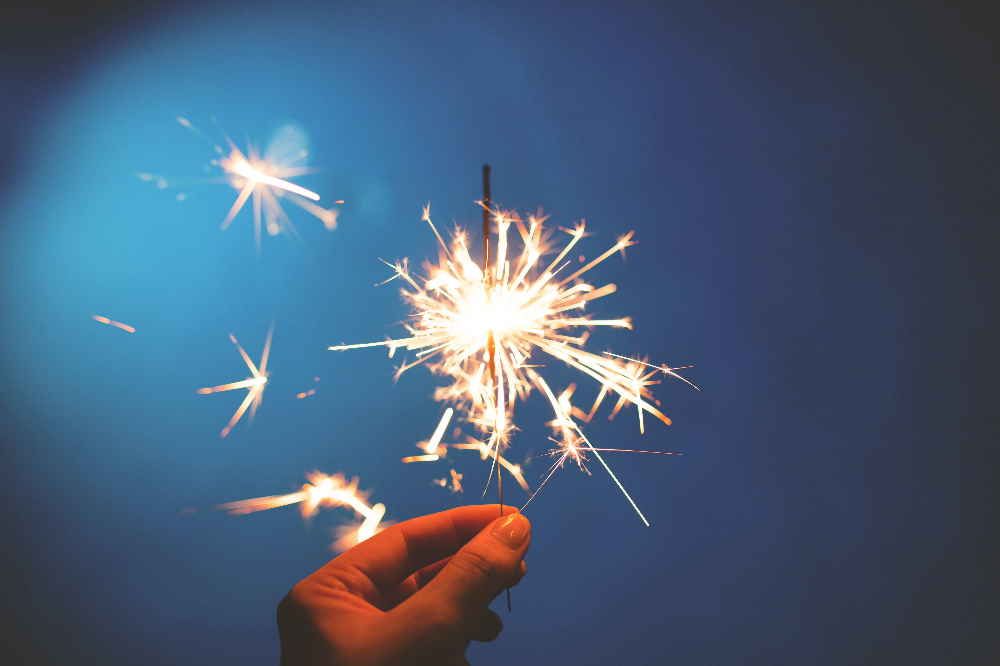

Welcome to my webpage! It's nice to meet you guys!
I have some hobbies like listening to music , swimming , and especially seeing western movies . In the passed two years , I have learned some practical skills.I have many hobbies.In my spare time,I like listening to some pop music,especially the music played by some pop bands.It can make me relax and let me forget my unhappy moment.If I'm in good mood,I always read some history books,which I think is benefical to my study .Besides,surfing the Internet is another means of entertainment of mine.Through the Internet I can get some useful information and chat with my friends as well.
Outgoing and enthusiastic .Hoping that I getting better and better. At the same time , I also always try my best I have strong motivation and ability to work together .I have the enthusiastic character,I'm friendly to everybody,honest,modest. I work with cares , diligences,responsibilities and patience. I have kindness for people and good at communications.